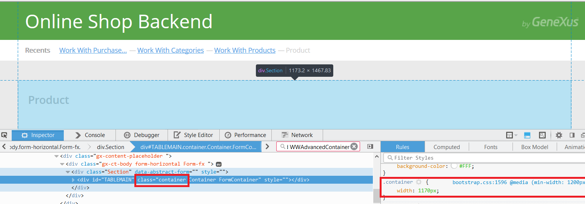
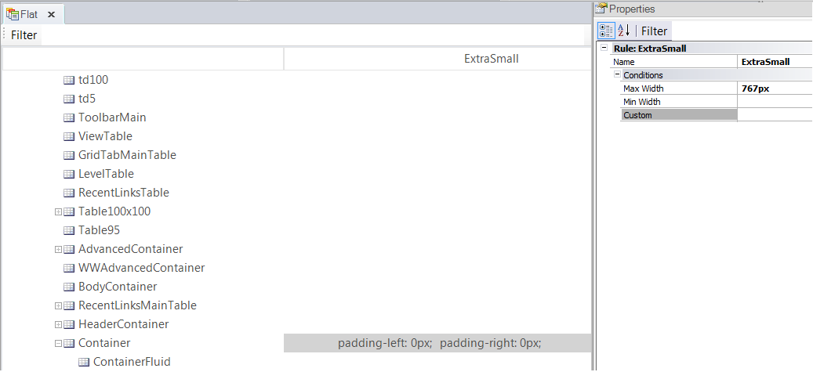

When the Container class - which is defined in the Theme Flat - is associated to the main Responsive Table of the form, GeneXus assigns to it automatically the "container" class which belongs to bootstrap.css. In fact, both classes are associated to the table in runtime, the "container" class of Bootstrap and the "Container" class of the GeneXus Theme. The same happens with the ContainerFluid class of the Theme Flat. When a Responsive Table is associated to it, in runtime it is associated to the classes "container-fluid ContainerFluid". In bootstrap.css the classes are defined as follows:
container {
padding-right: 15px;
padding-left: 15px;
margin-right: auto;
margin-left: auto;
}
@media (min-width: 768px) {
.container {
width: 750px;
}
}
@media (min-width: 992px) {
.container {
width: 970px;
}
}
@media (min-width: 1200px) {
.container {
width: 1170px;
}
}
.container-fluid {
padding-right: 15px;
padding-left: 15px;
margin-right: auto;
margin-left: auto;
}
ExampleThe Main Responsive Table of default WW forms and default web transaction forms are associated with the Container class. This class is a Conditional Class that sets a fixed width for extra small screen devices. 
|